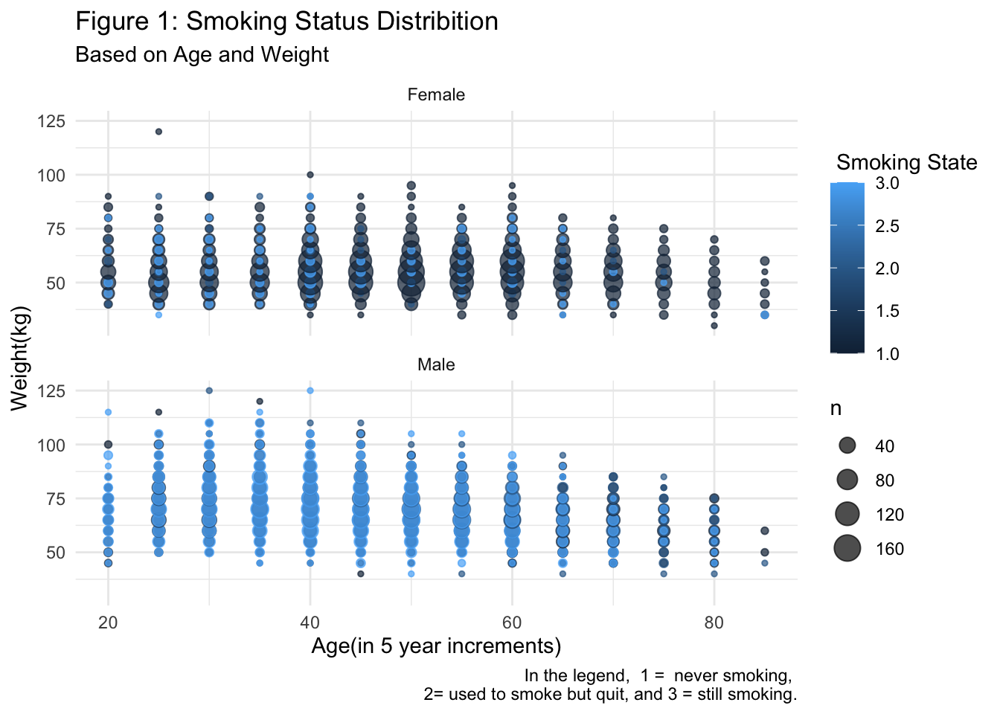

# Loading Data set
library(readxl)
library(readr)
dataset <- read_csv("smoking_driking_dataset_Ver01.csv", show_col_types = FALSE)Example Analysis
Predicting Smoking Status
Introduction
This analysis aims to predict individuals’ smoking status using multiple biochemical and body signal measures. The data set used for this analysis is obtained from Korea’s National Health Insurance Service (“Smoking and Drinking Dataset with Body Signal,” n.d.a, n.d.b). This analysis is intended for anyone interested in multinomial classification and prediction problems, especially in healthcare.
Exploring the Data Set
# removing null values
library(tidyr)
dataset <- drop_na(dataset)
# dimension of the data
dim(dataset)[1] 991346 24The data set includes almost a million observations and twenty-four variables.
# Checking if the groups are balanced
library(dplyr)
dataset %>%
group_by(SMK_stat_type_cd) %>%
tally()# A tibble: 3 × 2
SMK_stat_type_cd n
<dbl> <int>
1 1 602441
2 2 174951
3 3 213954As shown above the groups are not balanced. There are more observations with smoking status 1.
Note
Unbalanced groups can affect prediction accuracy.
To decrease run time, I will work on a sample of the data.
# sampling 10000 observations
data_small <- sample_n(dataset, 10000)glimpse(data_small)Rows: 10,000
Columns: 24
$ sex <chr> "Male", "Female", "Male", "Male", "Male", "Female", "…
$ age <dbl> 60, 45, 75, 25, 35, 55, 55, 60, 55, 60, 55, 40, 25, 6…
$ height <dbl> 170, 165, 150, 170, 170, 150, 165, 150, 165, 160, 165…
$ weight <dbl> 80, 60, 55, 75, 70, 60, 75, 40, 85, 70, 65, 60, 85, 5…
$ waistline <dbl> 95.0, 79.0, 80.0, 87.3, 76.0, 83.0, 90.1, 73.0, 100.0…
$ sight_left <dbl> 1.0, 0.5, 0.4, 1.2, 1.2, 0.5, 1.0, 1.0, 9.9, 0.9, 0.7…
$ sight_right <dbl> 1.2, 0.7, 0.5, 1.2, 0.8, 0.5, 1.0, 0.8, 9.9, 0.9, 0.4…
$ hear_left <dbl> 1, 1, 1, 1, 1, 1, 1, 1, 1, 1, 1, 1, 1, 1, 1, 1, 1, 1,…
$ hear_right <dbl> 1, 1, 1, 1, 1, 1, 1, 1, 1, 1, 2, 1, 1, 1, 1, 1, 1, 1,…
$ SBP <dbl> 128, 128, 140, 115, 110, 130, 130, 139, 124, 122, 138…
$ DBP <dbl> 82, 89, 85, 72, 60, 72, 70, 80, 84, 70, 82, 73, 71, 8…
$ BLDS <dbl> 113, 120, 120, 82, 99, 103, 92, 101, 180, 141, 100, 9…
$ tot_chole <dbl> 217, 176, 196, 186, 189, 163, 183, 146, 158, 140, 169…
$ HDL_chole <dbl> 48, 70, 71, 48, 42, 48, 36, 42, 50, 85, 30, 48, 51, 5…
$ LDL_chole <dbl> 130, 89, 91, 98, 114, 75, 102, 78, 68, 40, 122, 78, 1…
$ triglyceride <dbl> 193, 79, 169, 198, 165, 198, 221, 129, 193, 77, 84, 1…
$ hemoglobin <dbl> 15.2, 13.3, 15.3, 16.2, 14.2, 13.4, 17.6, 13.0, 15.1,…
$ urine_protein <dbl> 4, 1, 1, 1, 1, 1, 1, 1, 3, 3, 2, 1, 1, 4, 1, 1, 1, 1,…
$ serum_creatinine <dbl> 1.3, 0.7, 0.8, 1.1, 1.0, 0.8, 0.9, 0.7, 0.8, 0.9, 0.8…
$ SGOT_AST <dbl> 24, 28, 41, 26, 15, 44, 34, 24, 206, 19, 16, 19, 16, …
$ SGOT_ALT <dbl> 17, 17, 33, 27, 24, 52, 34, 23, 218, 19, 15, 21, 15, …
$ gamma_GTP <dbl> 32, 18, 19, 38, 20, 33, 36, 14, 326, 31, 20, 25, 20, …
$ SMK_stat_type_cd <dbl> 2, 1, 1, 3, 1, 1, 1, 1, 2, 1, 3, 1, 1, 1, 1, 3, 1, 1,…
$ DRK_YN <chr> "Y", "Y", "N", "Y", "Y", "N", "Y", "N", "Y", "Y", "N"…# Converting DRK_YN to numeric
data_small <- data_small %>%
mutate(DRK_YN = ifelse(DRK_YN=="Y",1,0))The table below displays the data dictionary(“Data Dictionary,” n.d.; “Smoking and Drinking Dataset with Body Signal,” n.d.b).
knitr::include_graphics("datadictionary.png")# looking for correlated variables
library(corrplot)corrplot 0.92 loadedcorrplot(cor(as.matrix(data_small[-c(1,23)])))As the correlation plot depicts, the variables LDL_chole and tot_chole, DBP and SBP, and SGOT_ALT and SGOT_AST are highly correlated. Therefore, one of each pair will be excluded when fitting the prediction model.
Highly correlated predictors can increase a model’s variance . A change in one variable will cause a change in another; therefore, small changes in the data might cause significant changes in the model and, thus, any predictions made using the model(Sonderegger 2020).
# removing correlated predictors
data_small <- select(data_small, -c('LDL_chole','SGOT_ALT','SBP'))Visualizing the data
Before fitting a model, I will visualize the data. Since there are over twenty predictors, only a fraction will be visualized.
# relationship between age,weight,and smoking status by sex
library(ggplot2)
ggplot(data_small, aes(x=age , y= weight,col= SMK_stat_type_cd )) +
geom_count(alpha = .7) +
facet_wrap(~sex, ncol=1) +
labs(title = "Figure 1: Smoking Status Distribition",
subtitle = "Based on Age and Weight",
color = " Smoking State", caption = " In the legend, 1 = never smoking,
2= used to smoke but quit, and 3 = still smoking.") +
xlab("Age(in 5 year increments)") +
ylab("Weight(kg)") +
theme_minimal() 
The plot above shows that more male than female smokers are represented in the data set. Furthermore, in both sexes, smokers are concentrated between the ages of 20 and 60.
The distribution of smokers can also be visualized by the bar graph bellow.
# distribution of smoking state by sex
ggplot(data_small, aes(x= SMK_stat_type_cd)) +
geom_bar( fill= "lightblue") +
facet_wrap(~sex, ncol=1) +
labs(title = "Figure 2: Smoking Status Distribition",
subtitle = "Among Female and Male.",
caption = " In the legend, 1 = never smoking,
2= used to smoke but quit, and 3 = still smoking.") +
xlab("Smoking State") +
ylab("Count") +
theme_minimal()# visualizing the relationship between hemaglobin levels and smoking status by sex
ggplot(data_small, aes(x= SMK_stat_type_cd, y= hemoglobin )) +
geom_jitter(alpha = 0.7,color = "lightblue") +
facet_wrap(~sex, ncol=1) +
labs(title = "Figure 3 :Smoking Status Distribition",
subtitle = "Based on Hemoglobin levels",
caption = " 1 = never smoking,
2= used to smoke but quit, and 3 = still smoking.") +
xlab("Smoking State") +
ylab("Hemaglobin Level(g/dl )") +
theme_minimal()
Note
Figures two and three both show that the classes of smokers are not balanced. As mentioned previously this might affect the prediction model.
Fitting a model: Logistic regression
Training and Test Set
# Splitting the data into 80% training and 20% testing set
set.seed(1)
s <- sample(c(TRUE, FALSE), nrow(data_small), replace=TRUE, prob=c(0.8,0.2))
train <- data_small[s, ]
test <- data_small[!s, ]# Checking dimensions
dim(train)[1] 7932 21# Checking dimensions
dim(test)[1] 2068 21# Fitting a logistic regression model
library(nnet)
model <- multinom(SMK_stat_type_cd~. , data=data_small)# weights: 66 (42 variable)
initial value 10986.122887
iter 10 value 8673.724060
iter 20 value 8250.640034
iter 30 value 7458.658271
iter 40 value 6754.881728
iter 50 value 6586.436470
final value 6586.433911
convergedsummary(model)Call:
multinom(formula = SMK_stat_type_cd ~ ., data = data_small)
Coefficients:
(Intercept) sexMale age height weight waistline
2 -10.620409 2.925871 0.02593050 0.03090314 -0.001900417 0.005839472
3 -8.685562 2.626920 -0.01472591 0.03531417 -0.025765405 0.006479847
sight_left sight_right hear_left hear_right DBP BLDS
2 -0.06820359 0.10671464 0.1044548 -0.2464631 -0.001663288 0.003170911
3 -0.10276378 0.07964418 0.3782790 -0.7167674 -0.005971759 0.001347542
tot_chole HDL_chole triglyceride hemoglobin urine_protein
2 0.0004332052 -0.003980560 0.000706877 0.02139296 -0.06740609
3 -0.0023024710 -0.006482351 0.002411808 0.18785655 0.03622582
serum_creatinine SGOT_AST gamma_GTP DRK_YN
2 -0.01594413 -0.004357052 0.002697511 0.8997814
3 -0.08902891 -0.011644103 0.005090166 0.9059403
Std. Errors:
(Intercept) sexMale age height weight waistline
2 0.006787641 0.1245859 0.003102926 0.003372770 0.005642170 0.006728727
3 0.008857996 0.1127778 0.002990206 0.003308721 0.005430747 0.006553603
sight_left sight_right hear_left hear_right DBP BLDS
2 0.04543168 0.04502619 0.2094327 0.2169149 0.003558236 0.001402729
3 0.05541398 0.05122702 0.2258313 0.2548453 0.003477884 0.001423862
tot_chole HDL_chole triglyceride hemoglobin urine_protein
2 0.0009641207 0.002836105 0.0004409006 0.02918514 0.07347282
3 0.0009447949 0.002744852 0.0004051826 0.02928019 0.07024143
serum_creatinine SGOT_AST gamma_GTP DRK_YN
2 0.07710696 0.002612902 0.0008741907 0.07351619
3 0.09077964 0.002932718 0.0008407197 0.07017520
Residual Deviance: 13172.87
AIC: 13256.87 # obtaining estimated probabilities
probablities <- fitted(model)
# making predictions
predictions <- predict(object=model, newdata=test, type="class")
# Confusion matrix
confusion_matrix <- table(Predicted= predictions,
True=test$SMK_stat_type_cd)
confusion_matrix True
Predicted 1 2 3
1 1020 110 118
2 83 111 63
3 143 129 291
Note
The model is more accurate in predicting the smoking status of individuals in Group 1(never smoking). The difference in prediction accuracy among the three groups is partly because of the class imbalance.
# Test Error
test_error <- mean(predictions!= test$SMK_stat_type_cd )
test_error[1] 0.3123791The model has an \(31.76\%\) testing classification error rate.
# Calculating accuracy of the method
round((sum(diag(confusion_matrix))/sum(confusion_matrix))*100,2)[1] 68.76The model has an \(68.23\%\) overall classification accuracy.
Summary
In this analysis, logistic regression was used to predict the smoking status of individuals using biochemical and body signal measures. The model’s prediction accuracy was \(68.23\%\), and the testing classification error rate was \(31.76\%\). The prediction accuracy could be increased by fitting a logistic regression model using a balanced training set. Other classification techniques such as lasso, discriminant analysis, or tree-based methods could also be employed to develop a model with better prediction accuracy.
List of functions
dplyr - sample_n(), glimpse(), group_by(), tally(), select(), mutate() tidyr - drop_na()
ggplot - geom_count(), geom_bar(), geom_jitter(), facet_wrap()
corrplot - corrplot()
nnet - multinom()